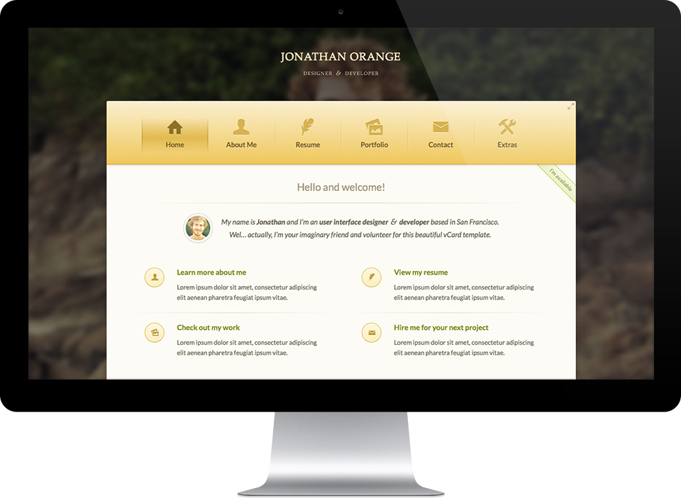
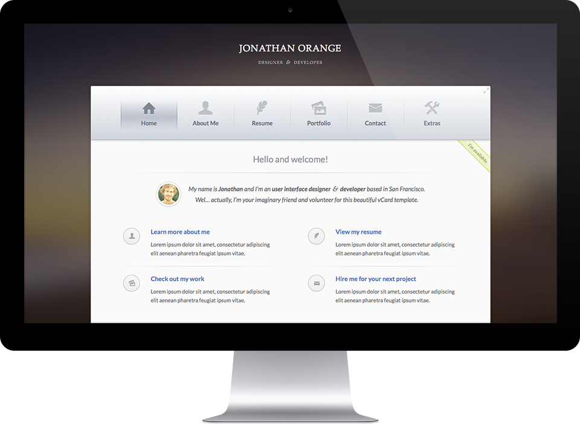
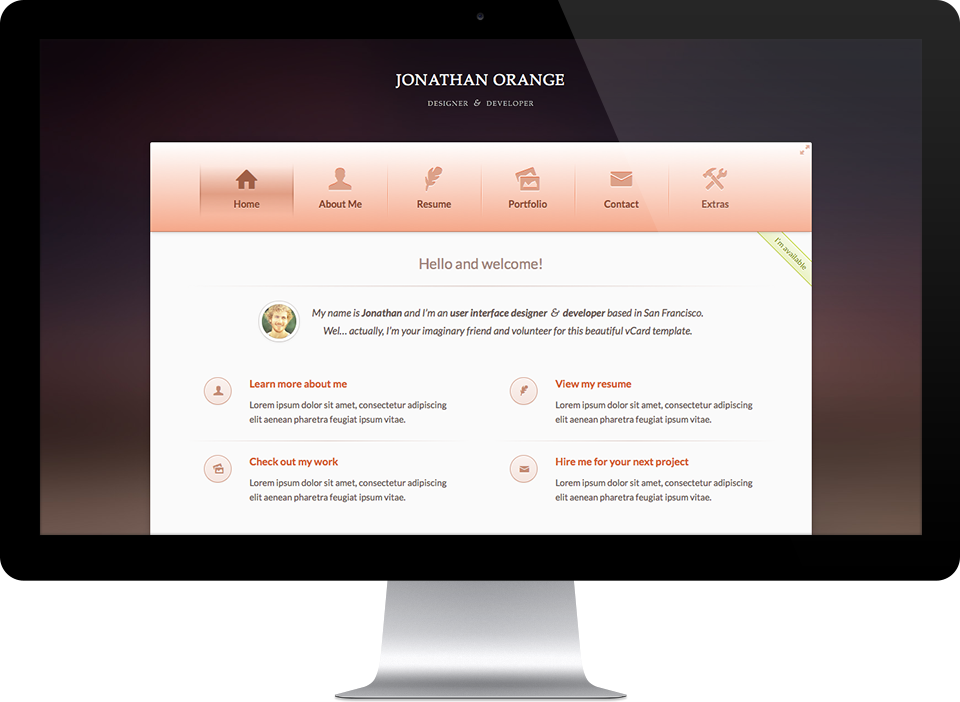
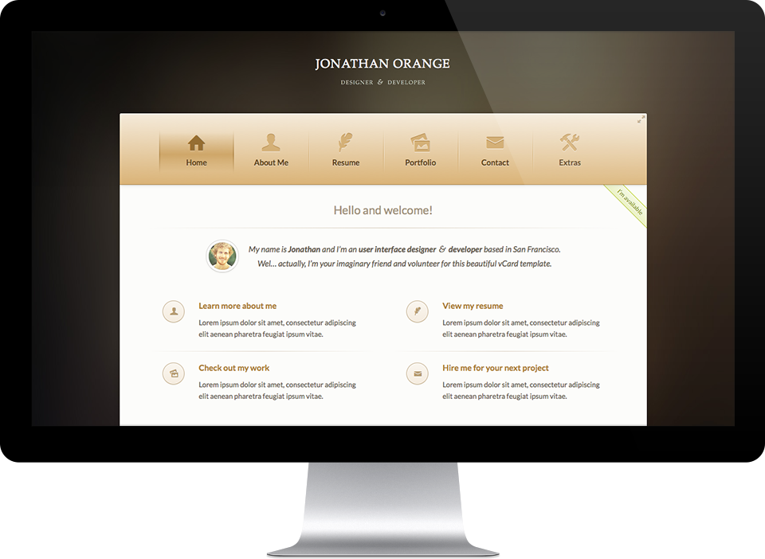
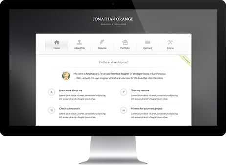

General Information
Browser Support
“Humanum” supports all modern browsers, including Safari, Chrome, Firefox, Opera and Internet Explorer 9+. Internet Explorer 8 and older versions are not supported.
Navigation
Thanks to AJAX and HTML5 History API, navigation between pages is done without reloading the browser window.
Files
This template contains 6 HTML pages:
Feel free to modify or delete any of these. You can even create new ones based on existing samples.
index.html |
about-me.html |
resume.html |
portfolio.html |
contact.html |
extras.html |
Besides the .html files, the template contains several directories listed as follows:
| Directory | Description |
|---|---|
css |
Stylesheet files |
fonts |
Web font files (in this case, only icon fonts are included) |
gfx |
Graphic files used by the template |
img |
Images that are not associated with the template (such as profile pictures etc.) |
js |
JavaScript files |
less |
CSS preprocessor sources (LESS) |
mail |
PHP files to support the contact form |
Markup
General Structure
The general HTML structure is the same throughout all the pages. It's quite simple:
As you can guess, all your custom content is contained within div.man-content.
<!doctype html>
<html>
<head>
...
</head>
<body>
<header id="header">
<h1><a href="index.html">Name</a></h1>
<h2>Title</h2>
</header>
<div id="container">
<nav id="mainnav" role="navigation">
menu items
...
</nav>
<div class="main-content">
page content
...
</div> <!-- /main-content -->
</div> <!-- /container -->
<footer id="footer">
footer
...
</footer> <!-- /footer -->
</body>
</html>
Styles
Stylesheets
Here's a list of the stylesheet files used by this template. You can find all of them in the /css directory.
| File Name | Description |
|---|---|
icons.css |
Stylesheet for the icon font We use Entypo icon font by Daniel Bruce |
normalize.css |
CSS normalization file Many browser interpret the default style of html elements differently. By using a general CSS normalization file, we can make to style elements in the same way. It's not recommended to modify this file. |
|
|
Main CSS files with 8 different color styles These are CSS files responsible for styling all the elements of the template. Please note that you can have included only one of them in the same time. If you want to switch between the color versions, modify the href attribute of the link element responsible for including main CSS file in yout HTML files:<link rel="stylesheet" href="css/skin-[your-color].css"> |
no-js.css |
Styles for JavaScript-disabled browsers |
Color Styles
This template comes with 8 different color versions to choose from:

Gold

Silver
Blue

Red
Green

Brown
Light Blue

White
CSS Structure
All the CSS styles are divided into 30 logical modules.
All of them are indicated with appropriate CSS comment, so you will be able to easily find where each module starts and ends.
Layout & Grid System Body Background Text & Typography List Styles Links & Buttons Images Forms Alerts Ribbons Sliders Tabs Accordions Filter Tabs Content Switch Header Main Menu Footer Content Footer Boxes Tooltips Popups Social Media Buttons Homepage Resume Portfolio Contact Media Queries Initial Animations IE Fixes Template Preview Styles
If you would like to edit style of a specific element of the site, simply find the appropriate module in the CSS file, and then scroll down until you find the appropriate element that needs to be edited.
less directory.JavaScript
JavaScript Files
Here's a list of the JavaScript files used by this template. You can find all of them in the /js directory.
| File Name | Description |
|---|---|
scripts.js |
The main JavaScript file which controlls behaviour of all the elements of the template |
jquery.min.js |
A JavaScript library. Quite famous, huh? |
jquery.backstretch.min.js |
A jQuery plugin that allows you to add a dynamically-resized background image to any page or element |
jquery.cycle2.min.js |
A simple and versatile slideshow plugin |
jquery.cycle2.swipe.min.js |
Supports the swipe gesture for advancing slides on touch devices |
jquery.magnific-popup.min.js |
A responsive jQuery lightbox plugin |
jquery.mixitup.min.js |
A CSS3 and jQuery filter & sort plugin |
jquery.placeholder.min.js |
A jQuery plugin that enables HTML5 placeholder behavior for browsers that aren’t trying hard enough yet |
jquery.tooltipster.min.js |
A jQuery plugin for creating semantic, modern tooltips enhanced with the power of CSS |
parsley.min.js |
A Javascript forms validator |
twitter-fetcher.min.js |
A handy tool for displaying your Twitter posts on your website |
JavaScript Customization
At the top of your scripts.js file you can find following code:
// Settings
var settings = {
pageTransition: 'scroll-vertical', // page transition (fade, scale, scroll-vertical, scroll-horizontal)
bodyBackgroundImage: true, // show body background image? (true, false)
bodyBackgroundImagePath: 'img/background-1.jpg', // path to the background image
twitterWidgetId: '355933225069187074' // your Twitter widget ID (see the documentation)
}
Below are detailed descriptions of each option:
| Variable | Description |
|---|---|
pageTransition |
Here you can define the page transition effect. Values: fade, scale, scroll-vertical, scroll-horizontal. |
bodyBackgroundImage |
You can choose if you want to have an image as your website background. The default value is true, but you can set it to false if you want to remove the image and control the background from your CSS file. |
bodyBackgroundImagePath |
The path of your body background. Please note that it should be relative to your HTML files (and not the JavaScript file). |
twitterWidgetId |
If you want to have a Twitter feed on your website, define the Twitter widget ID here. How to get the Twitter widget ID? It's a bit tricky, but here is how:
|
E-mails
In order to enable sending e-mails through your contact form, you have to meet 2 conditions:
- Have a PHP-enabled server
- Edit your mail server settings – you can find those settings at the top of the
mail/send.phpfile:
$host = 'smtp.yourdomain.com'; // e.g. smtp.gmail.com $username = 'your_username'; // e.g. yourname@gmail.com $password = 'your_password'; // your password $myName = 'Your Name'; // your full name $myEmail = 'your@email.com'; // your e-mail address
PSD
I've included 10 PSD files that correspond with 2 color variations (Gold and Silver) and 5 different pages:
- Home
- About Me
- Resume
- Portfolio
- Contact
Credits
I've used the following tools and resources as listed below.
-
Open source projects and jQuery plugins
- normalize.css by Nicolas Gallagher
- LESS Hat by creators of CSS Hat
- PHPMailer by Brent R. Matzelle
- jQuery by John Resig
- jQuery Backstretch by Scott Robbin
- jQuery Cycle2 by Mike Alsup
- Magnific Popup by Dmitry Semenov
- MixItUp by Patrick Kunka
- jQuery Placeholder by Mathias Bynens
- jQuery Tooltipster by Caleb Jacob
- Parsley.js by Guillaume Potier
- Twitter Fetcher by Jason Mayes
-
Icons
- Entypo by Daniel Bruce
-
Fonts
- Lato by Łukasz Dziedzic
Thank you!
Thanks again for purchasing this template. If you have any questions, please feel free to contact me. Have a nice day!